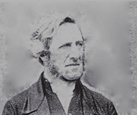

汤姆斯凯立 Thomas Kelly (1769-1855)

诗人小传
在诗歌史上，汤姆斯·凯立的名声，几乎直逼比他早半个世纪的查理卫斯理。虽然他们相处在不同的时代里，但每当我们唱他们所写的诗歌时，总是觉得这些诗是在永远常新的十字架之下写的，都是被神羔羊大爱激励而发出的心声。不只是他们俩人如此，其实我们可以从诗歌史上发现一条定律：最卓越的教会诗人，往往是诞生在圣灵水流最激荡最壮阔的时代里。当神的教会要往前时，最阻拦神的见证的，往往是已经成形的宗教世界，但是清心跟随主的子民从不委屈神的见证而有所妥协，他们注视升天掌权基督的荣耀，而力抗宗教世界。这些争战与神家的属灵前途息息相关，每每进行到最炽烈、最危急的关头时，神的子民是凭什么而得胜呢？乃是赞美！他们口唱新歌、仰望羔羊，就脚踩蛇蝎，击溃仇敌在宗教世界里发酵的势力。
因此，每一位诗人身上，都有这个特点：他们注视十架得胜羔羊、升天得荣基督，仇敌权势在他们眼目中如同无有。凯立就是这样的一位诗人，他一生忠诚跟随主，从不与宗教权势妥协，然而今天我们唱他的诗歌时，却一点也闻不到七倍烈窑的火燎味，而是四溢基督的馨香！
钉十架的基督定夺了他的一生
诗人凯立，于一七六九年七月，出生在爱尔兰皇后郡的盖力卫尔（Kellyville in Queen’s County）。他的父亲是爱尔兰法院的法官，所以他从都柏林大学毕业时，就有意献身法津。但是神在他身上有祂的美好的计划，就在他面临抉择时，扭转了他一生的道路。
当他在研读法津文献时，为了追本溯源，他居然学会了希伯来文，这样他就可以涉猎古代，如闪族的法律。当时他所用的一本希伯来文汇编的作者——罗曼尼（William Romaine）是一位敬虔人，凯立因着对他发生兴趣，就读起他的另一本著作一一福音教义（Evangelical Doctrines），圣灵也藉着这本书的信息，在他里头工作，光照他，叫他在神面前切实地认罪悔改了。
如今活着乃是基督活在里面
凯立知道他的罪，被主宝血洗净了；但他马上发现，他并不能从罪恶的权势下释放出来，他对他自己的光景仍然满了烦躁不安。他自己专攻法律，更叫他明白：在神的完全律法之下，他只有被定罪的份。怎么办呢？年轻的凯立，就尽力改革自己，但严厉地对待自己，不时地禁食祷告，好像一个禁欲主义者一样。他以为只要藉着这些善功，除去邪情私欲，就可以讨神的喜悦了。过了一段时间，他和保罗一样，才发现原来他整个人里面，根本就没有良善，罪就调在他的性情里面，他真是苦啊！直到这时，神的光才照亮他：主钉十架，不但流出血来，叫他的罪得赦免；而且主的身子，也舍了，替他承受律法的咒诅。因此，乃是因信接受这份恩典，才能叫他在神面前称义的，而非靠着他的行为，或任何善功。下面有两首诗最足以诠释他此时所蒙属灵的大转机：
恩典——最甜天籁（Grace is the Sweetest Sound）
（一）竟然绕我们楣，恩典——最甜天籁。
良心控告、公义蹙眉，惟它驱我惊骇。
（二）它是亮光自由，释放罪律囚奴，
填墓威势，恩典除透，夸胜死亡阴府。
（三）心灵贫户！恩典乃是敞开宝库，
涌出奇妙医治活泉，永远你心内住。
（四）我们尽唱恩典——喜乐、奇妙题目，
恩典先沐，荣耀随满，与主同王永远。
上面一首说到恩典，下面一首则说到十架的救赎：
赞美救主，顺服至死（We Sing the Praise of Him Who Died，1815）
（一）赞美救主，顺服至死，死于咒诅十架，恩深；
世人轻蔑，我却注视，并将世界当作有损。
（二）十架如嵌金句辉煌：“神就是爱”，荧荧可见；
神的羔羊既挂木上，裂天倾下旷世恩典。
（三）十架除去我们罪担，蛰睡心灵得以苏醒；
每一苦杯变为甘甜，盼望满怀，雀跃死荫。
（四）怯懦灵魂，今得刚毅，软弱膀臂，争战奋兴；
十架扫空墓中惊惧，死床之上铺设光明。
（五）化除咒诅，保证主爱，十架流出生命恩膏，
在此，罪人避难所在，在天，圣徒赞美所绕。
握有绝对权柄的主，为着祂家中的需要，就在短短的时间之内，把“重生得救”，和“从律法中得自由”两层经历，扎实地作在凯立里面，不但叫他享受了在基督里的平安，也夺了他的心，视基督为至宝，一生忠诚服事祂。
蒙召跟随羔羊点燃复兴的火
一七九二年，诗人二十三岁，他决定答应主的呼召，放下律师的锦绣前程，一生单一来服事主。起先，他被爱尔兰的国立教会按立为传道人。当时爱尔兰教会的光景非常死沉，很少传讲福音。诗人既被主爱激励，就非常不满于现状，要起来传福音。主也量给他另外一位同伴——希尔（Roland Hill）弟兄，跟他有同样的负担和感觉，俩人交通以后，就决定不顾一切压制，为主往前。
他就开始每个主日下午在都柏林传福音信息。他的灵炙热如火，马上就点燃起弟兄姊妹向主的心。这种热切要主的光景，叫那些愚民高枕的牧师，坐立不安，嫉妒他们，想法子要除掉他。他们所带来的震撼力，不只是震动了宗教领袖，主要是暴露了国立教会组织的根本错谬——用世界的利益、方法和原则，来组织严密的宗教，或许能塞住人的宗教需求，但绝对不能满足神，而且这种组织发展成为一道雄厚的城墙，阻拦了神见证的往前，并扑灭所有圣灵的火苗。
因此，这个复兴的火才点燃不久，它的影响力就在神的儿女中间很快地蔓延开来，国教领袖们就“合城不安”。有的人说，他太疯狂了；有的人说，他的话太属灵兮兮，不符合社会需要；有的人说，他讲道太不婉转了；有的人说，像他这样爱主太枉费了，会叫教会失去许多世上的好处。许许多多的声浪，虽然说法不同，却汇成一种声音，就像是主受审的那天，听汇成的那个声音：“除掉祂！除掉祂！除掉祂！”最后，都柏林的总主教浮乐（Dr．Fowler）也亲自去听他讲道，问明了他所根据的教义原则后，就决定：开除他和希尔俩人，而且所有都柏林地区的讲台都向他们关闭！
经历基督羞辱而持定升天基督 他们俩人毫不妥协地离开了国教。国教虽然向他们关闭，但主的门却是无人能关的。他们离开后，灵更高昂自由，因为他们可以按着主给他们的话语，完全释放出来，没有人的顾忌，和组织的辖制。当时，国教以外的独立教会，仍有向他们开门的，他们可以自由地传信息。此外，他自己也在都柏林一带建立好几处聚会，在神的儿女中间辛勤地牧养他们。
虽然如此，这种与宗教权势之间争战的经历，仍叫他受尽许多十字架的苦难，使他深深地体会到什么是基督的羞辱。他是一个真为主受苦的人，绝对不为自己求什么利益和地位，完全为神的儿女摆上。十字架在他身上，不是一个名词，乃是一个实际，一个生命。藉着进入主的苦难，他也进入了主升天得荣的境界。那一位得胜掌权的羔羊，一直是他一生的注视，叫他荣上加荣逐日变化，像从主的灵变成的。这一点是他诗歌最突出的特征，也是他许多诗歌的主题和灵感的泉源。